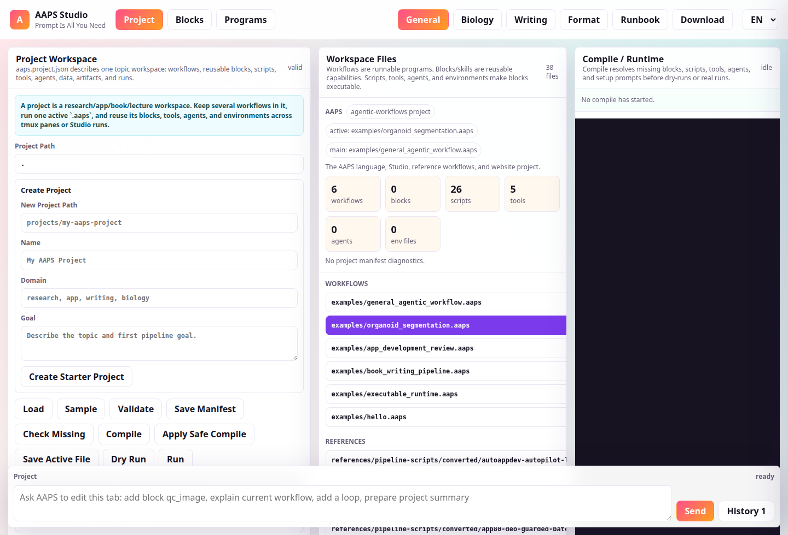
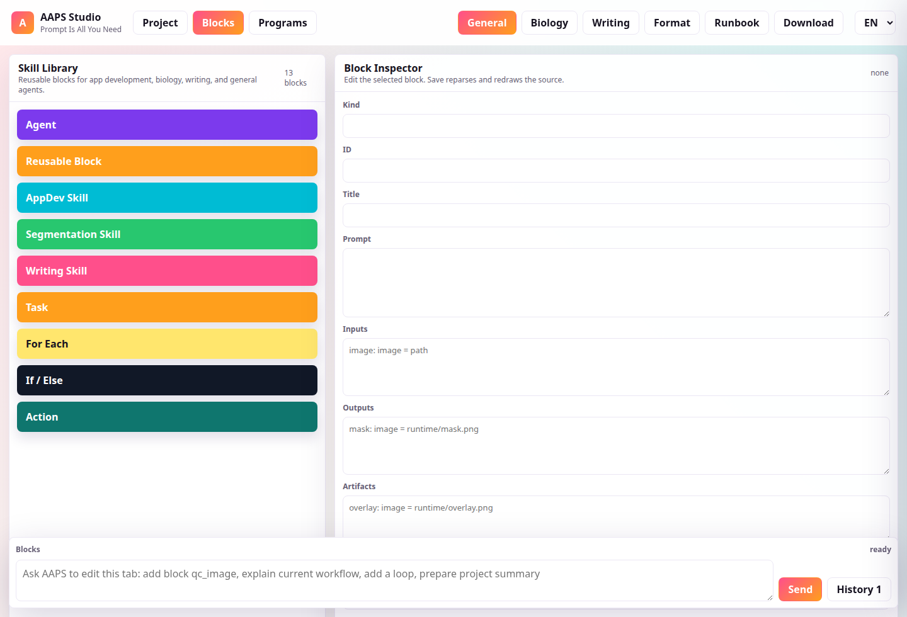
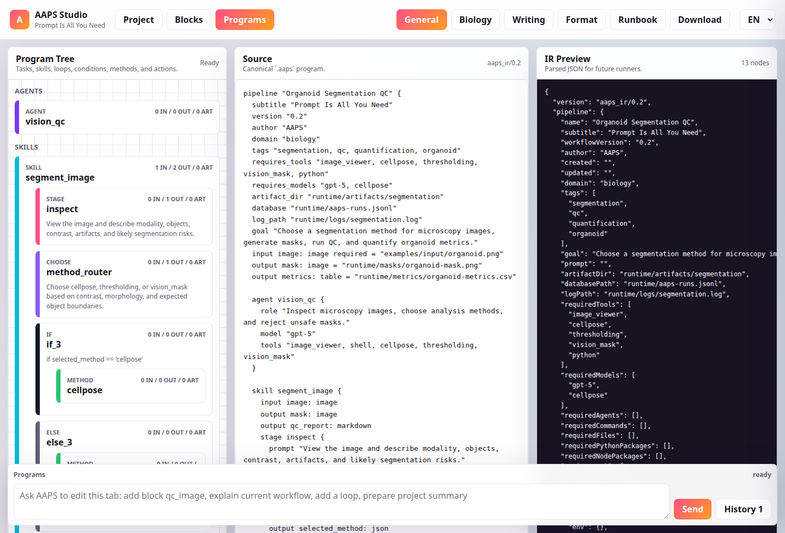

Prompt-Native
Prompts are first-class code blocks with agents, inputs, outputs, checks, and retry rules.
Autonomous Agentic Pipeline Script
Prompt Is All You Need
A small programming language and visual studio for turning prompts into planned, resumable, verifiable autonomous work across software, biology, writing, and operations.
npm install -g @lazyingart/aaps
Install Path
AAPS is published as a scoped npm package so one install can provide the parser, compiler/planner, CLI runner, and local Studio server. Release publishing is configured for GitHub Actions Trusted Publishing, so npm accepts the release workflow through OIDC.
npm install -g @lazyingart/aaps
aaps studio --host 127.0.0.1 --port 8796
aaps parse workflows/main.aaps --project .
aaps compile workflows/main.aaps --project . --mode check
aaps check workflows/main.aaps --project .
aaps run workflows/main.aaps --project . --jsonAAPS Studio
The Studio webapp is separate from this landing page. It opens on a Project tab for topic workspaces, then Blocks for reusable skills, then Programs for source editing. Projects can be created from a starter template with reusable blocks, scripts, tools, agents, environments, and a main workflow. Backend settings keep Codex as the default agentic wrapper while allowing DeepSeek v4 pro when configured locally. It now keeps chat in a fixed bottom dock available on every tab, with the transcript tucked behind a History button and colored user/AAPS messages. It supports project file actions, script browsing, block inspection, block-level chat, inline/external code editing, environment/tool/agent registry browsing, typed ports, artifacts, validations, recovery policies, human review markers, tree visualization, loops, conditions, functional blocks, block readiness, compile reports, setup prompts, and JSON IR preview.
Launch Studio


Prompts are first-class code blocks with agents, inputs, outputs, checks, and retry rules.
Every task has a name and dependency edge, so runtimes can pause, resume, and audit work.
Choose methods explicitly with skill, action, method, guard, loop, and condition blocks.
Manage many block, skill, workflow, draft, archive, artifact, and run files through one manifest.
Run shell or Python actions, validate artifacts, retry, fall back, and emit repair reports.
The Language
AAPS abstracts the common loop from agentic app builders, writing systems, biomedical analysis tools, and report generators: inspect, route, act, verify, summarize, and publish.
pipeline "Ship AAPS Studio" {
subtitle "Prompt Is All You Need"
domain "biology"
goal "Segment images, QC masks, and quantify objects."
agent vision_scientist {
role "Route between deterministic tools and vision models."
model "gpt-5"
tools "image_viewer, cellpose, thresholding"
}
skill segment_image {
input image: image
output mask: image
exec python_script "scripts/threshold_segment.py"
choose method_router {
prompt "Choose cellpose, thresholding, or vision_mask."
}
guard qc_gate {
verify "Mask boundaries and object counts are plausible."
}
}
}AAPS Projects
Real agentic work is rarely one script. AAPS projects use `aaps.project.json` to track reusable blocks, skills, modules, subworkflows, main programs, drafts, archives, data folders, artifact roots, run databases, variables, tools, models, agents, environment registries, and project notes.
{
"schema": "aaps_project/0.1",
"name": "Organoid Analysis Project",
"defaultMain": "workflows/main.aaps",
"activeFile": "workflows/main.aaps",
"artifactRoot": "artifacts",
"runDatabase": "runs/organoid-aaps-runs.jsonl",
"tools": ["threshold_segmentation"],
"agents": ["codex_repair_agent"],
"files": {
"blocks": ["blocks/qc_image.aaps"],
"skills": ["skills/microscopy_qc.aaps"],
"workflows": ["workflows/main.aaps"]
}
}Runtime
AAPS now separates parse, compile, plan, and execute. The compiler resolves missing blocks, scripts, tools, agents, dependencies, setup prompts, and provenance before the runtime builds an execution plan. The first runtime executes shell, Python, inline Python, Node, npm, agent-prompt, noop, and manual steps, writes stdout/stderr logs, checks artifacts, validates JSON/non-empty files and masks, retries failures, runs fallback commands or fallback blocks, and creates repair/setup prompts when recovery is needed.
task qc_image {
environment python = "python3"
requires_files "scripts/qc.py"
compile_agent "codex_repair_agent"
retry 1
repair true
exec python_script "scripts/qc.py"
arg output_json = "${run.artifacts}/qc.json"
validate exists "${run.artifacts}/qc.json"
validate json "${run.artifacts}/qc.json"
fallback "run: python3 scripts/basic_qc.py"
}Generate a folder of synthetic PGM images, loop through every image, run QC, threshold masks, quantify objects, and export combined CSV/JSON/Markdown reports.
Scan a project folder, produce JSON structure metrics, and route findings into review notes.
Organize outline, draft, consistency, revision, and human approval blocks across a multi-file project.
Use `aaps parse`, `aaps plan`, `aaps check`, `aaps check-block`, `aaps run`, `aaps run-block`, and `aaps validate` outside the browser.
Deploy Target
The repository ships with GitHub Pages deployment from `website/`, a custom domain file, and a Studio artifact copied to `/studio/` during deployment.